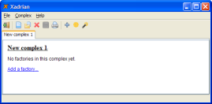
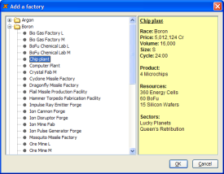
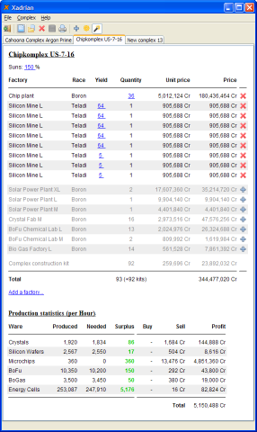

When Xadrian is started then it begins with a fresh new factory complex as shown in this figure:
You can now begin adding factories to this new complex by clicking the Add a factory hyperlink or by clicking the corresponding function in the menu or the toolbar. This will open this dialog window:
Factories are grouped by their races in form of a tree. Select the factory (or multiple factories) you want to add to your complex. On the right side of the dialog window Xadrian will list useful information about the factories. Click OK to add the selected factories to the complex.
In the complex view a red cross icon is drawn right of each factory entry. You can click this icon to remove the factory from the complex.
To change the quantity of a factory simply click the quantity (which is a hyperlink). A dialog window will pop up where you can enter the new quantity.
To change the yield of a mine simply click the yield value and enter a new yield. You can also enter multiple values to quickly integrated lot of mines into the complex.
You can change the sun power by clicking the suns percent value at the top of the complex view. This influences the effectivity of solar power plants so it's always a good idea to set the correct value here depending on the target sector in the game.
Alternatively you can select a sector for your complex. The sun power is then determined automatically.
Xadrian can automatically calculate the base complex. This means Xadrian can add needed factories automatically to get a self-sustaining complex. You can enable or disable this feature with the wand toolbar button or the corresponding item in the Complex menu. Xadrian can't add mines to the complex automatically. So you will end up with a complex which still needs Silicon Wafers or Ore. You have to add mines manually to satisfy these needs.
Automatically added factories are displayed in gray in the complex view and each factory has a blue plus icon at the right. You can click this icon to convert an automatically generated factory into a manual one. This is useful if you want to accept and fine-tune the automatically added factories.
A finished complex looks like this:
As you can see in the production statistics this complex is completely self-sustaining.
Now you know the basics. All other stuff like saving, loading and printing should be self-explanatory.